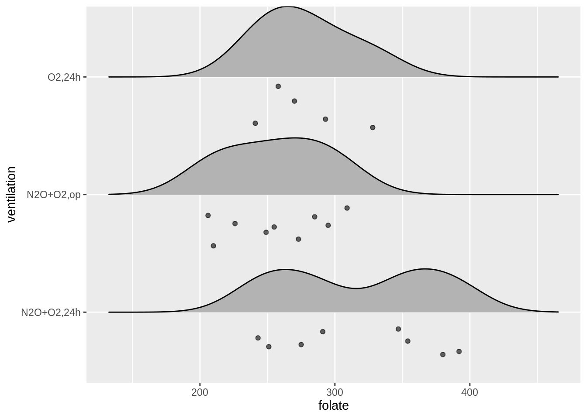
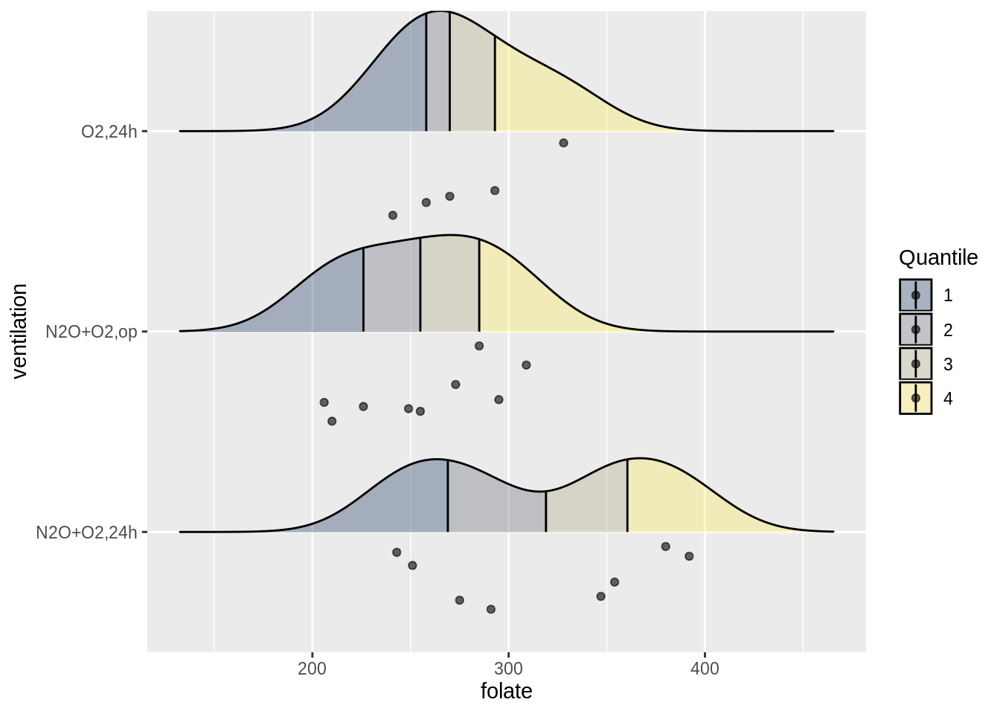

Chapter 3 Ridgeline plots
Hojin Lee and Hyuk Joon Kwon
3.1 Overview
Ridgeline plot is a set of overlapped density plots, and it helps us to compare multiple distirbutions among dataset. Professor Claus O. Wilke from UT Austin, who created ggridges package, commented about ridgeline plot as below:
“Ridgeline plots are partially overlapping line plots that create the impression of a mountain range. They can be quite useful for visualizing changes in distributions over time or space. These types of plots have also been called “joyplots”, in reference to the iconic cover art for Joy Division’s album Unknown Pleasures. However, given the unfortunate origin of the name Joy Division, the term “joyplot” is now discouraged."
In this section, we will discuss how to create ridgeline plots using the ggplot and ggridges libraries.
3.2 tl;dr
For those who do not want to go through the documents, the below is the polished version of a ridgeline plot and the codes.
library(ucidata)
library(ggplot2)
library(ggridges)
library(viridis)
library(plyr)
library(nycflights13)
weather$month <- as.factor(weather$month)
ggplot(weather, aes(x = temp, y = reorder(month, desc(month)), fill = factor(..quantile..))) +
stat_density_ridges(quantiles = c(0.25,0.5,0.75)
, quantile_lines = TRUE
, geom = "density_ridges_gradient"
, alpha = 0.6
, scale = 2.3) +
scale_fill_viridis(discrete = TRUE
, name = "Quantile"
, alpha = 0.3
, option = "cividis") +
ggtitle("What is the weather like in NYC?",
subtitle = "Ridgeline plot for NYC temperature by months") +
xlab("Temperature (F)") +
ylab("Months") +
labs(caption = "Source: nycflights13::weather") +
theme(plot.title = element_text(face="bold")) +
theme(plot.subtitle = element_text(face="bold", color="grey")) +
theme(plot.caption=element_text(color="grey"))## Picking joint bandwidth of 1.58## Warning: Removed 1 rows containing non-finite values (stat_density_ridges). For more information about dataset, type ?nycflights13::weather into the console.
For more information about dataset, type ?nycflights13::weather into the console.
3.3 Simple examples
For one who needs friendly step by step approach, please read the below.
First, we need to install ggridges and ggplot2 packages.
Make sure that the y variable is a categorical variable, otherwise the function will throw an error. You can use y = as.factor(data) to transfrom your y variable into a categorical variable.
data <- forest_fires
data$day <- factor(data$day
, levels= rev(c("sun", "mon", "tue", "wed", "thu", "fri", "sat")))
ggplot(data, aes(x = DMC, y = day)) +
geom_density_ridges()## Picking joint bandwidth of 21
If you do not want the ridgeline plot to touch each other, please use the scale variable. A scale of 1.0 will make the adjust graph to barely touch each other. If the scale is greater than 1 the graphs will overlap with each other. Otherwise, if the scale is less than 1 the graphs will not touch each other.
data <- forest_fires
data$day <- factor(data$day
, levels= rev(c("sun", "mon", "tue", "wed", "thu", "fri", "sat")))
ggplot(data, aes(x = DMC, y = day)) +
geom_density_ridges(scale = 1.1)## Picking joint bandwidth of 21
There is a raindrop function within ridgeline plots, which combine the rideline plots with scatter plots; the function will plot scatter plot under the rideline plot.
library(ISwR)
data2 <- red.cell.folate
ggplot(data2, aes(x = folate, y = ventilation)) +
stat_density_ridges(quantiles = c(0.25,0.5,0.75)
, geom="density_ridges_gradient"
, jittered_points = TRUE
, position = "raincloud"
, alpha = 0.6
, scale = 0.6) ## Picking joint bandwidth of 24.5
Morevoer, it is possible to divide the data into quantiles and draw lines in between. This way, it would be easier for us to observe the median value and the interquartile range.
data <- forest_fires
data$day <- factor(data$day
, levels= rev(c("sun", "mon", "tue", "wed", "thu", "fri", "sat")))
ggplot(data, aes(x = temp, y = day, fill = factor(..quantile..))) +
stat_density_ridges(quantiles = c(0.25,0.5,0.75)
, quantile_lines =TRUE
, geom="density_ridges_gradient") +
scale_fill_viridis(discrete = TRUE
, name = "Quantile"
, option = "plasma")## Picking joint bandwidth of 1.93
In below, we have merged all the functions we have introduced, and here is the result!
data2 <- red.cell.folate
ggplot(data2, aes(x = folate, y = ventilation, fill = factor(..quantile..))) +
stat_density_ridges(quantiles = c(0.25,0.5,0.75)
, quantile_lines = TRUE
, geom="density_ridges_gradient"
, jittered_points = TRUE
, position = "raincloud"
, alpha = 0.6
, scale = 0.6) +
scale_fill_viridis(discrete=TRUE
, name = "Quantile"
, alpha = 0.3
, option = "cividis")## Picking joint bandwidth of 24.5
Here is one last cool feature of ridgeline plots where we can overlap distributions within same data group. This enables us to compare distributions not only among different data groups but also within same data groups.
library(vcd)
data3 <- Arthritis
ggplot(data3) +
geom_density_ridges(aes(x = Age, y = Treatment, group = interaction(Treatment,Improved),fill = Improved), alpha = 0.7)## Picking joint bandwidth of 5.42
3.4 Theory
Ridgeline plots are an overlap of histograms over y-axis, and this allows us to visualize and compare overall shape of distribution among different groups. They work very well when the dataset has high number of groups to show. Also, since we are overlapping distributions, we can save space for graphs. In other words, if the number of groups to represent is too small, plotting ridgeline plots might not be an optimal choice for data visualization. On the other hand, the ridgeline plots work well when there are clear differences in distributions. Otherwise, because of overlaps, they would cause more confusion when deciphering the data.
Couple points to think about before plotting the ridgeline plots:
Ordering of groups will change overall shape of the plots.
Figure out the optimal bin size & bandwidth argument for the visualization.
3.5 External resources
The below has more examples with the ridgeline plots:
https://cran.r-project.org/web/packages/ggridges/vignettes/introduction.html
https://cmdlinetips.com/2018/03/how-to-plot-ridgeline-plots-in-r/